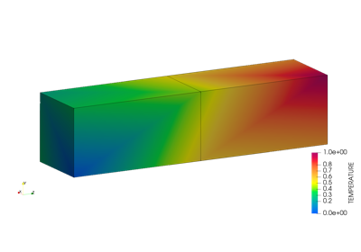

femio
Contents:
Examples
Basic Usage of FEMIO
femio package
femio
Examples
View page source
Examples

FEMIO usage examples.

Basic Usage of FEMIO
Basic Usage of FEMIO
Gallery generated by Sphinx-Gallery